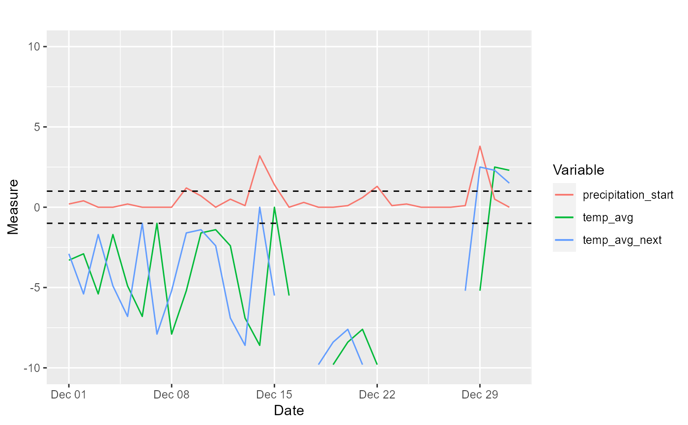

identify_winter_events.RdThis functions identifies the winter events related to temperature and precipitation described in Lundqvist et al. (2007). The functions uses daily temperature (min, max, or average, in degrees Celcius) and precipitation (in mm) to identify events that may be harsh weather conditions for reindeer husbandry.
identify_winter_event3( date, temp_min, temp_max, precipitation, temp_min_thr = -2, temp_max_thr = 2, prec_thr = 3 ) identify_winter_event4( date, temp_avg, precipitation, temp_avg_day = +1, temp_avg_next_day = -1, prec_thr = 3 )
| date | date object. vector. Vector of dates in a time series of a given winter. |
|---|---|
| temp_min | numeric. vector. Minimum daily temperature, in Celsius. |
| temp_max | numeric. vector. Minimum daily temperature, in Celsius. |
| precipitation | numeric. vector. Precipitation accumulated each day, in mm. |
| temp_min_thr | numeric. Threshold of minimum temperature, in Celsius, used for event 3. |
| temp_max_thr | numeric. Threshold of maximum temperature, in Celsius, used for event 3. |
| prec_thr | numeric. Threshold of precipitation, in mm, used for events 3 and 4. |
| temp_avg | numeric. vector. Average daily temperature, in Celsius. |
| temp_avg_day | numeric. Threshold of average temperature in the day, in Celsius, used for event 4. |
| temp_avg_next_day | numeric. Threshold of average temperature in the following day, in Celsius, used for event 4. |
A list with the elements:
time series with 0 for days with no event and 1 with days when the event occurred.
number of days when the event occurred.
number of events, by aggregating subsequent days when it repeatedly happened.
duration of each event, in days.
starting date of each event.
time series with the counter of the number of events. Similar to events.
These elements are calculated for both the whole winter and only the first half of the winter.
The events are: * Events 1 and 2 are still to be implemented; * Event 3: Day when max temp > 2, min temp < -2, and precipitation > 3 mm; * Event 4: Day when average temp > 1, precipitation > 3 mm, followed by day with average temp < -1.
Lundqvist, H., Norell, L., Danel, O. 2007. Multivariate characterisation of environmental conditions for reindeer husbandry in Sweden. Rangifer, 27(1): 5-23.
library(ggplot2) library(dplyr) data(weather_mittadalen) weather <- weather_mittadalen %>% dplyr::filter(year == 2014) # events 3 with(weather, identify_winter_event3(date, temp_min, temp_max, prec))#> $events3 #> [1] 0 0 0 0 0 0 0 0 0 0 0 0 0 0 0 0 0 0 0 0 0 0 0 0 0 0 1 0 0 0 0 0 0 0 0 0 0 #> [38] 0 0 0 0 0 0 0 0 0 0 0 0 0 0 0 0 0 0 0 0 0 0 0 0 0 0 0 0 0 0 0 0 0 0 0 0 0 #> [75] 0 0 1 0 0 0 0 0 0 0 1 0 0 0 0 0 0 0 0 0 0 0 0 0 0 0 0 0 0 0 0 0 0 0 0 0 0 #> [112] 0 0 0 0 0 0 0 0 0 0 0 0 0 0 0 0 0 0 0 0 0 0 0 0 0 0 0 0 0 0 0 0 0 0 0 0 0 #> [149] 0 0 0 0 0 0 0 0 0 0 0 0 0 0 0 0 1 0 0 0 0 0 0 0 0 0 0 0 0 0 0 0 0 0 0 0 0 #> [186] 0 0 0 0 0 0 0 0 0 0 0 0 0 0 0 0 0 0 0 0 0 0 0 0 0 0 0 #> #> $n_days #> [1] 4 #> #> $n_events3 #> [1] 4 #> #> $duration_events3 #> [1] 1 1 1 1 #> #> $event_dates #> [1] "2013-10-27 UTC" "2013-12-16 UTC" "2013-12-24 UTC" "2014-03-14 UTC" #> #> $n_event3_date #> [1] 0 0 0 0 0 0 0 0 0 0 0 0 0 0 0 0 0 0 0 0 0 0 0 0 0 0 1 0 0 0 0 0 0 0 0 0 0 #> [38] 0 0 0 0 0 0 0 0 0 0 0 0 0 0 0 0 0 0 0 0 0 0 0 0 0 0 0 0 0 0 0 0 0 0 0 0 0 #> [75] 0 0 2 0 0 0 0 0 0 0 3 0 0 0 0 0 0 0 0 0 0 0 0 0 0 0 0 0 0 0 0 0 0 0 0 0 0 #> [112] 0 0 0 0 0 0 0 0 0 0 0 0 0 0 0 0 0 0 0 0 0 0 0 0 0 0 0 0 0 0 0 0 0 0 0 0 0 #> [149] 0 0 0 0 0 0 0 0 0 0 0 0 0 0 0 0 4 0 0 0 0 0 0 0 0 0 0 0 0 0 0 0 0 0 0 0 0 #> [186] 0 0 0 0 0 0 0 0 0 0 0 0 0 0 0 0 0 0 0 0 0 0 0 0 0 0 0 #> #> $events3_begin #> [1] 0 0 0 0 0 0 0 0 0 0 0 0 0 0 0 0 0 0 0 0 0 0 0 0 0 0 1 0 0 0 0 0 0 0 0 0 0 #> [38] 0 0 0 0 0 0 0 0 0 0 0 0 0 0 0 0 0 0 0 0 0 0 0 0 0 0 0 0 0 0 0 0 0 0 0 0 0 #> [75] 0 0 1 0 0 0 0 0 0 0 1 0 0 0 0 0 0 0 0 0 0 0 0 0 0 0 0 0 0 0 0 0 0 0 0 0 0 #> [112] 0 0 0 0 0 0 0 0 0 0 0 0 0 0 0 0 0 0 0 0 0 0 0 0 0 0 0 0 0 0 0 0 0 0 0 0 0 #> [149] 0 0 0 0 0 0 0 0 0 0 0 0 0 0 0 0 0 0 0 0 0 0 0 0 0 0 0 0 0 0 0 0 0 0 0 0 0 #> [186] 0 0 0 0 0 0 0 0 0 0 0 0 0 0 0 0 0 0 0 0 0 0 0 0 0 0 0 #> #> $n_days_begin #> [1] 3 #> #> $n_events3_begin #> [1] 3 #> #> $duration_events3_begin #> [1] 1 1 1 #> #> $event_dates_begin #> [1] "2013-10-27 UTC" "2013-12-16 UTC" "2013-12-24 UTC" "2014-03-15 UTC" #> #> $n_event3_date_begin #> [1] 0 0 0 0 0 0 0 0 0 0 0 0 0 0 0 0 0 0 0 0 0 0 0 0 0 0 1 0 0 0 0 0 0 0 0 0 0 #> [38] 0 0 0 0 0 0 0 0 0 0 0 0 0 0 0 0 0 0 0 0 0 0 0 0 0 0 0 0 0 0 0 0 0 0 0 0 0 #> [75] 0 0 2 0 0 0 0 0 0 0 3 0 0 0 0 0 0 0 0 0 0 0 0 0 0 0 0 0 0 0 0 0 0 0 0 0 0 #> [112] 0 0 0 0 0 0 0 0 0 0 0 0 0 0 0 0 0 0 0 0 0 0 0 0 0 0 0 0 0 0 0 0 0 0 0 0 0 #> [149] 0 0 0 0 0 0 0 0 0 0 0 0 0 0 0 0 0 0 0 0 0 0 0 0 0 0 0 0 0 0 0 0 0 0 0 0 0 #> [186] 0 0 0 0 0 0 0 0 0 0 0 0 0 0 0 0 0 0 0 0 0 0 0 0 0 0 0 #>#> $events4 #> [1] 0 0 0 0 0 0 0 0 0 0 0 0 0 0 0 0 0 0 0 0 0 0 0 0 0 #> [26] 0 0 0 0 0 0 0 0 0 0 0 0 0 0 0 0 0 0 0 0 0 0 0 0 0 #> [51] 0 0 0 0 0 0 0 0 0 0 0 0 0 0 0 0 0 0 0 0 0 0 0 0 0 #> [76] 0 0 0 0 0 0 0 1 0 0 0 0 0 0 0 0 0 0 0 0 0 0 0 0 0 #> [101] 0 0 0 0 0 0 0 0 0 0 0 0 0 0 0 0 0 0 0 0 0 0 0 0 0 #> [126] 0 0 0 0 0 0 0 0 0 0 0 0 0 0 0 0 0 0 0 0 0 0 0 0 0 #> [151] 0 0 0 0 0 0 0 0 0 0 0 0 0 0 0 0 0 0 0 0 0 0 0 0 0 #> [176] 0 0 0 0 0 0 0 0 0 0 0 0 0 0 0 0 0 0 0 0 0 0 0 0 0 #> [201] 0 0 0 0 0 0 0 0 0 0 0 NA #> #> $n_days #> [1] 1 #> #> $n_events4 #> [1] 1 #> #> $duration_events4 #> [1] 1 #> #> $event_dates #> [1] "2013-12-22 UTC" #> #> $n_event4_date #> [1] 0 0 0 0 0 0 0 0 0 0 0 0 0 0 0 0 0 0 0 0 0 0 0 0 0 0 0 0 0 0 0 0 0 0 0 0 0 #> [38] 0 0 0 0 0 0 0 0 0 0 0 0 0 0 0 0 0 0 0 0 0 0 0 0 0 0 0 0 0 0 0 0 0 0 0 0 0 #> [75] 0 0 0 0 0 0 0 0 1 0 0 0 0 0 0 0 0 0 0 0 0 0 0 0 0 0 0 0 0 0 0 0 0 0 0 0 0 #> [112] 0 0 0 0 0 0 0 0 0 0 0 0 0 0 0 0 0 0 0 0 0 0 0 0 0 0 0 0 0 0 0 0 0 0 0 0 0 #> [149] 0 0 0 0 0 0 0 0 0 0 0 0 0 0 0 0 0 0 0 0 0 0 0 0 0 0 0 0 0 0 0 0 0 0 0 0 0 #> [186] 0 0 0 0 0 0 0 0 0 0 0 0 0 0 0 0 0 0 0 0 0 0 0 0 0 0 #> #> $events4_begin #> [1] 0 0 0 0 0 0 0 0 0 0 0 0 0 0 0 0 0 0 0 0 0 0 0 0 0 0 0 0 0 0 0 0 0 0 0 0 0 #> [38] 0 0 0 0 0 0 0 0 0 0 0 0 0 0 0 0 0 0 0 0 0 0 0 0 0 0 0 0 0 0 0 0 0 0 0 0 0 #> [75] 0 0 0 0 0 0 0 0 1 0 0 0 0 0 0 0 0 0 0 0 0 0 0 0 0 0 0 0 0 0 0 0 0 0 0 0 0 #> [112] 0 0 0 0 0 0 0 0 0 0 0 0 0 0 0 0 0 0 0 0 0 0 0 0 0 0 0 0 0 0 0 0 0 0 0 0 0 #> [149] 0 0 0 0 0 0 0 0 0 0 0 0 0 0 0 0 0 0 0 0 0 0 0 0 0 0 0 0 0 0 0 0 0 0 0 0 0 #> [186] 0 0 0 0 0 0 0 0 0 0 0 0 0 0 0 0 0 0 0 0 0 0 0 0 0 0 0 #> #> $n_days_begin #> [1] 1 #> #> $n_events4_begin #> [1] 1 #> #> $duration_events4_begin #> [1] 1 #> #> $event_dates_begin #> [1] "2013-12-22 UTC" #> #> $n_event4_date_begin #> [1] 0 0 0 0 0 0 0 0 0 0 0 0 0 0 0 0 0 0 0 0 0 0 0 0 0 0 0 0 0 0 0 0 0 0 0 0 0 #> [38] 0 0 0 0 0 0 0 0 0 0 0 0 0 0 0 0 0 0 0 0 0 0 0 0 0 0 0 0 0 0 0 0 0 0 0 0 0 #> [75] 0 0 0 0 0 0 0 0 1 0 0 0 0 0 0 0 0 0 0 0 0 0 0 0 0 0 0 0 0 0 0 0 0 0 0 0 0 #> [112] 0 0 0 0 0 0 0 0 0 0 0 0 0 0 0 0 0 0 0 0 0 0 0 0 0 0 0 0 0 0 0 0 0 0 0 0 0 #> [149] 0 0 0 0 0 0 0 0 0 0 0 0 0 0 0 0 0 0 0 0 0 0 0 0 0 0 0 0 0 0 0 0 0 0 0 0 0 #> [186] 0 0 0 0 0 0 0 0 0 0 0 0 0 0 0 0 0 0 0 0 0 0 0 0 0 0 0 #># visualize events 4 for this year weather_condition <- with(weather, analyze_weather(date, snow_depth, prec, temp_min, temp_max, temp_avg, start = "first_date", plot_first_snow = T)) to_plot <- weather_condition to_plot$weather_indices <- weather_condition$weather_indices %>% dplyr::mutate(temp_avg_next = c(temp_avg[-1], NA)) %>% dplyr::filter(lubridate::month(date) == 12) to_plot %>% plot_weather(term = c("temp_avg", "prec", "temp_avg_next"), factor_mult = c(1,1)) + geom_hline(yintercept = c(-1,1), linetype = 2) + ylim(-10, 5)